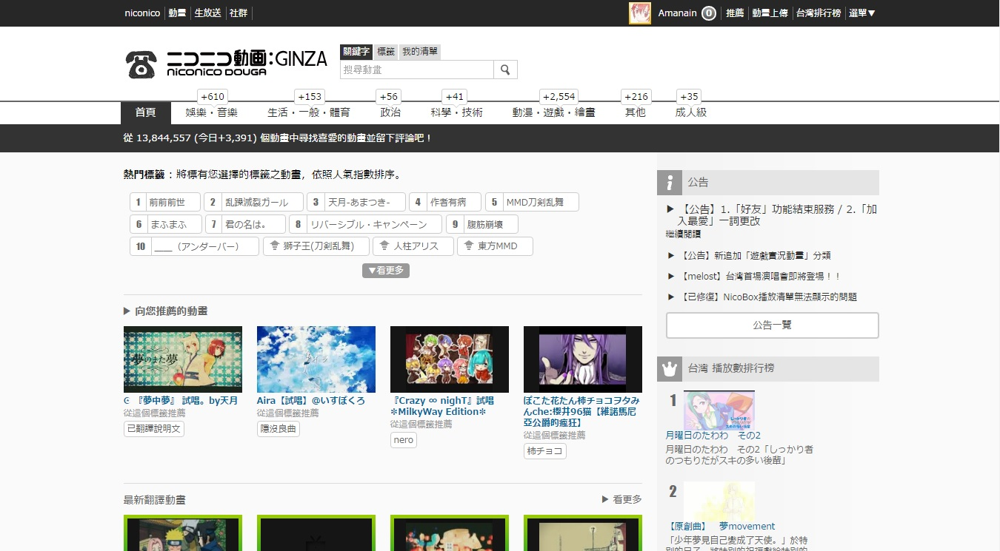
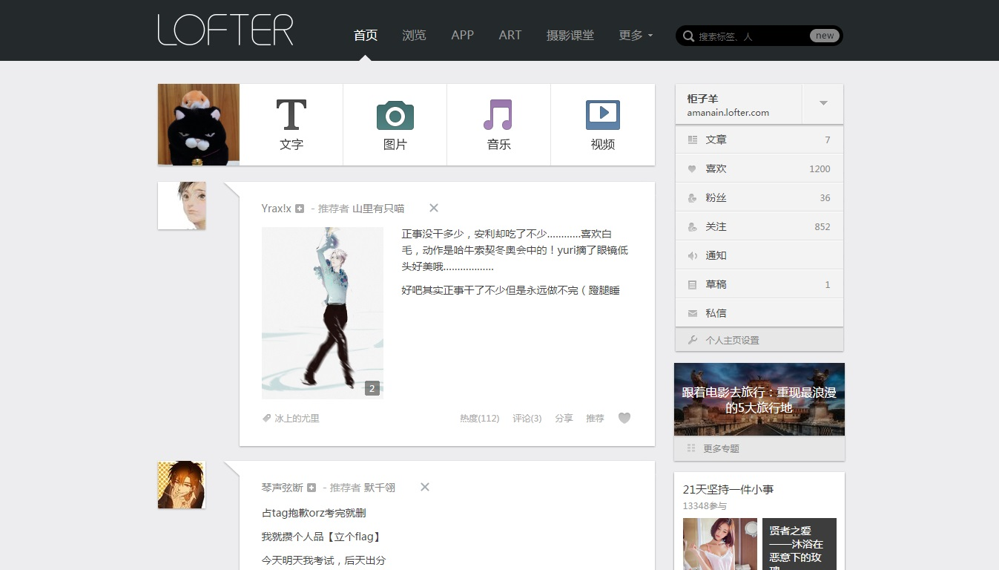
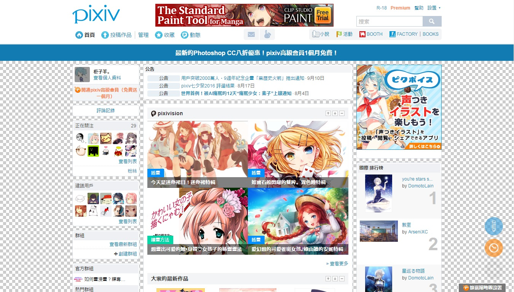

推薦網站連結與簡介
▶ニコニコ動画 
可以觀看影片的地方，包括歌曲、動畫、實況……，提供日文、英文和中文介面。
niconico動畫（日語：ニコニコ動畫）是日本Dwango公司的子公司ニワンゴ(Niwango)所贊助提供的線上彈幕影片分享網站，常被簡稱為niconico或nico等，其中「niconico」在日文中為微笑之意。niconico動畫與YouTube等影片共用網站相似，但niconico動畫提供觀賞者可在影片上留言並以彈幕的形式出現在影片上的功能。（來源：維琪百科）
▶Lofter乐乎 
主要為寫文章的地方，可以跟對岸交流！
LOFTER，中文名樂乎，是由網易開發的輕博客服務，目標群體是小眾的文藝青年。
LOFTER官方介紹頁面宣稱其為「簡單隨性的記錄工具，凝聚精華的創作平台」。
與其他中華人民共和國的公司提供的輕博客服務不同，LOFTER一開始便注重原創，並提出了「專注興趣，分享創作」的口號來闡述LOFTER的定位。LOFTER認為其與競爭對手不同，特立獨行。
與傳統博客時代類似，LOFTER繼承了網易博客培養新星的傾向，與新浪的網誌服務重視名人效應的價值觀相反。（来源：维基百科）
▶Pixiv 
這裡能上傳自己的圖畫創作，也能欣賞別人的作品！
pixiv是一個主要由日本藝術家所組成的虛擬社群，主體為由pixiv股份有限公司所運營的為插畫藝術特化的社群網路服務網站。
pixiv於2007年9月10日由上谷隆宏等人首次推出第一個測試版，目前Pixiv公司總部位於日本東京都澀谷區千駄谷。截至2010年5月，pixiv已擁有超過200萬會員、1100萬份作品，並每天會收到超過20000份原創作品。而在2010年1月時，該網站平均每天約被存取約34萬次；2010年5月統計時，則每個月平均約有15億次瀏覽數。
pixiv目的是提供一個能讓藝術家發表他們的插圖，並透過評級系統反應其他用戶意見之處，網站以用戶投稿的原創圖畫為中心，輔以標籤、書籤、作品回應、排行榜等功能形成具有其特色的社群網路。（来源：维基百科）